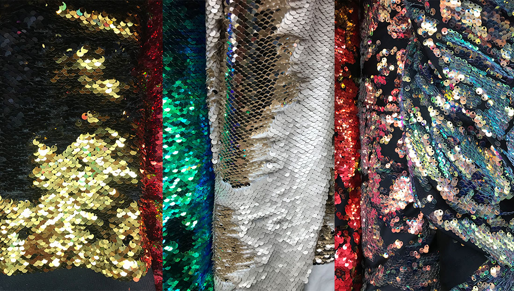
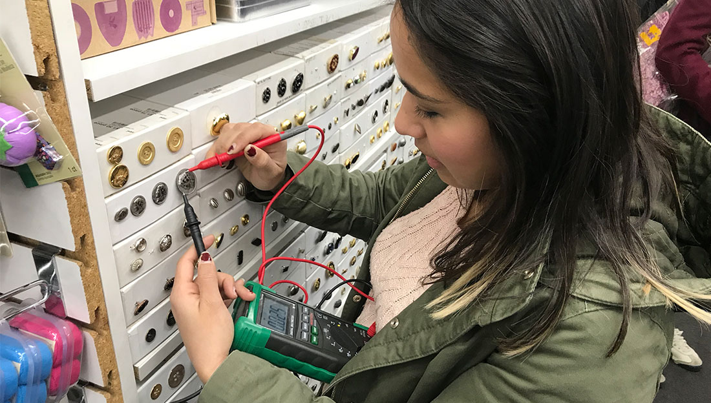
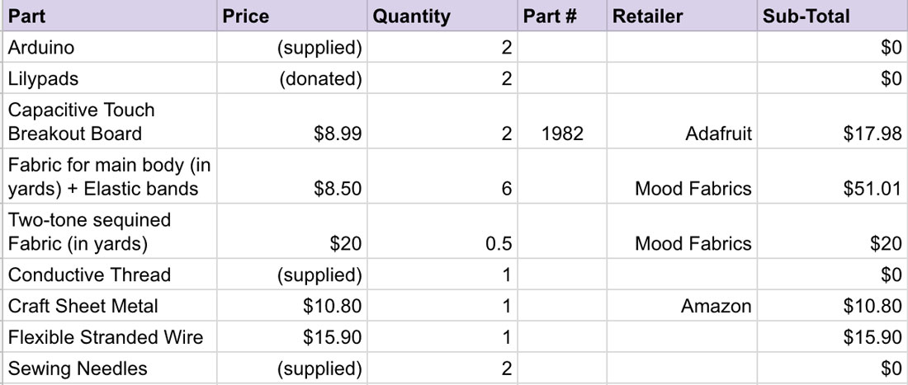

Week 10: Final Project Progress & BOM
Nov 14, 2018
This week, Rashida and I went on a hunt for materials to make our "jacket" to the garment district at Moods fabric. We were looking at what fabrics that we could use to elevate the sense of touch and movement. We looked into two-sided sequins that we could use for some areas of the jacket.
We also brought the multimeter to the fabric store to see if there were any other conductive materials to use to create into capacitive touch sensors, but unfortunately, most "metal" buttons that they had were either not conductive at all or conducting very minimal electricity. So we decided to not get any.
Below is a screenshot of our bill of materials spreadsheet so far:
For the product testing for this week's class, we made a simple version of our jacket. We used the scrap fabric that we found at the soft lab and made a shirt and Rashida sewed conductive thread onto the shirt. We then connected the conductive thread to a flexible wire then connected to the MPR121 Capacitive Touch breakout board.
We also chose some sounds to put use for sound samples to be triggered upon touch, then wrote a very simple p5.sound sketch that triggers it.
We are keeping all of our code in this project github repo.
Plans for next two weeks:
- Figure out how to network the two lilypads together
- Make the two base jackets / shirts
- Identify textural patterns & practice embroidery skills
- Add conductive sequins to the sequins fabric we purchased
- Create more audio files